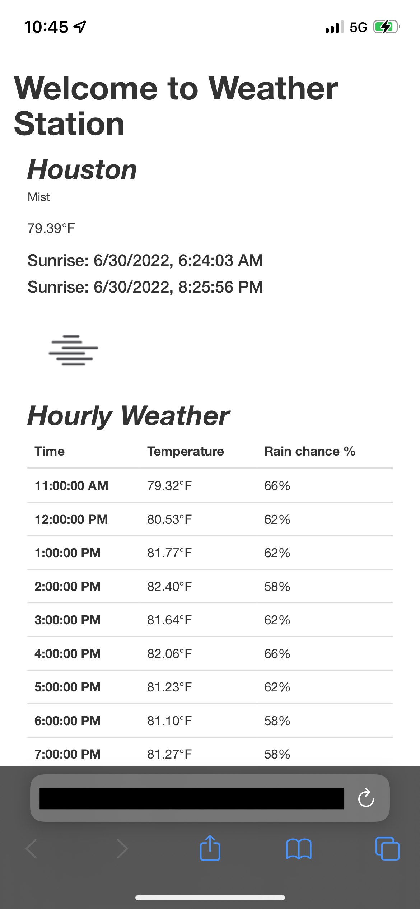
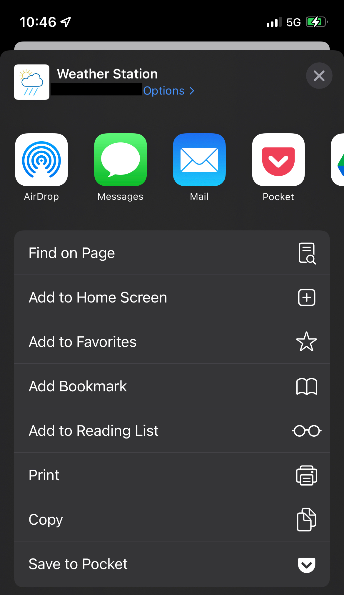
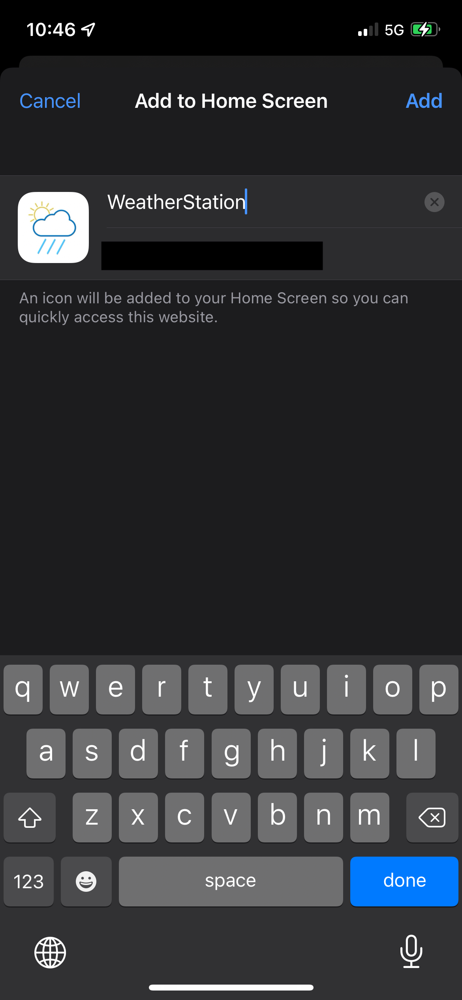
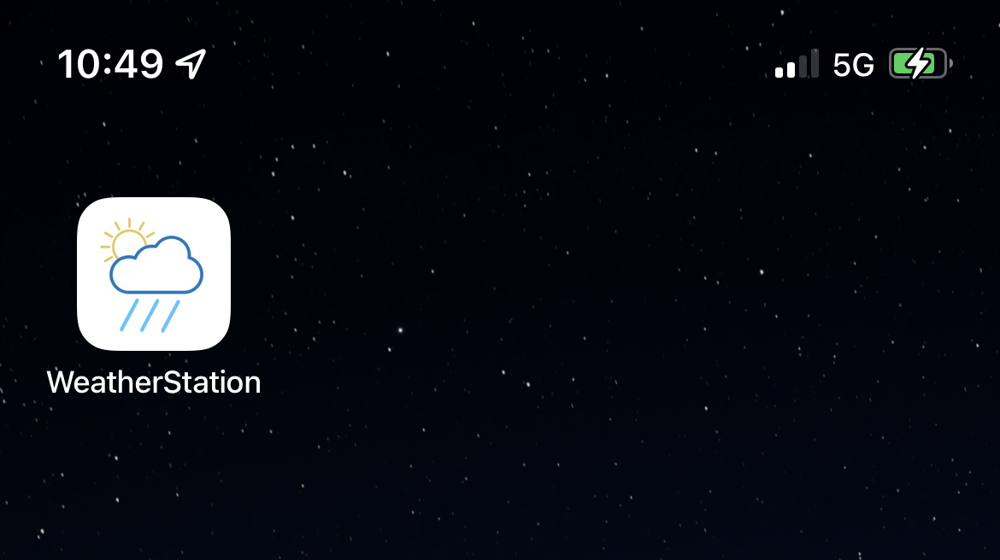

Given the recent Geoweather update, users can now add the Geoweather home page to their home screen (iOS only).
The instructions are as follows:
Go to the Weather page. Tap the "Share" icon in the bottom bar (box with arrow pointing up) to open the share menu.
In this menu, tap "Add to Home Screen."
Tap "Add" at the top right.
You should now have an icon like this on your home screen.
